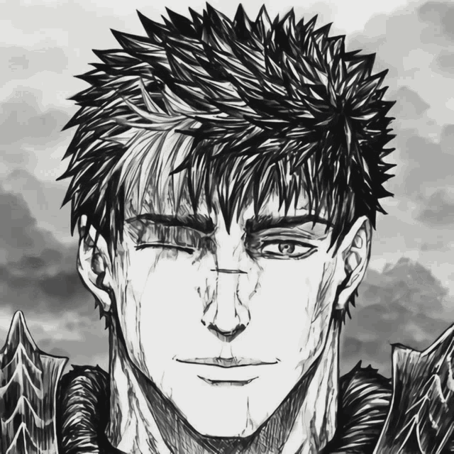
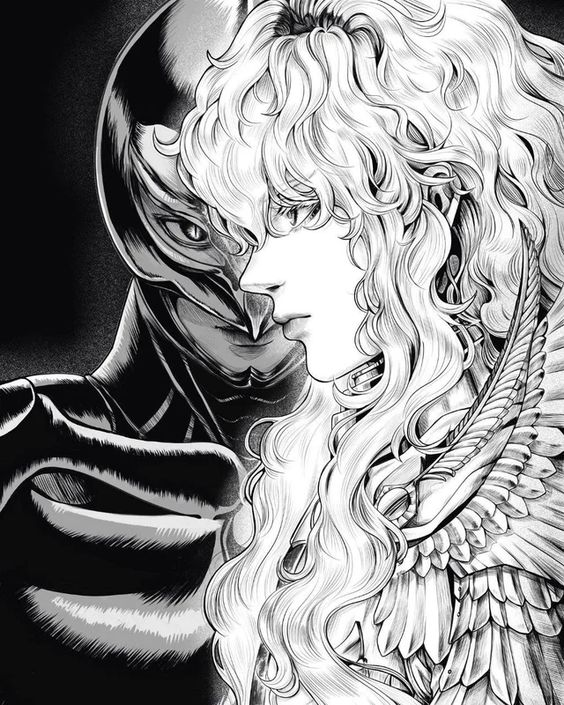

| Guts |
|---|
|  |
| Este é Guts |
| Ele é um guerreiro mercenário que foi criado e treinado desde a infância como um soldado em um grupo de mercenários conhecido como Bando dos Falcões. Guts é conhecido por sua habilidade excepcional em combate e sua grande força física, que lhe permite empunhar uma enorme espada de duas mãos com facilidade. |
| Griffith |
|---|
|  |
| Este é Griffith |
| Ele é o líder do grupo de mercenários conhecido como Bando do Falcão, e é retratado como um jovem carismático e ambicioso, com um grande sonho de se tornar um rei. No entanto, para realizar este sonho Griffith passará por experiências horríveis até chegar a God-Hand e se tornar Femto, assim se tornando o principal vilão da história |